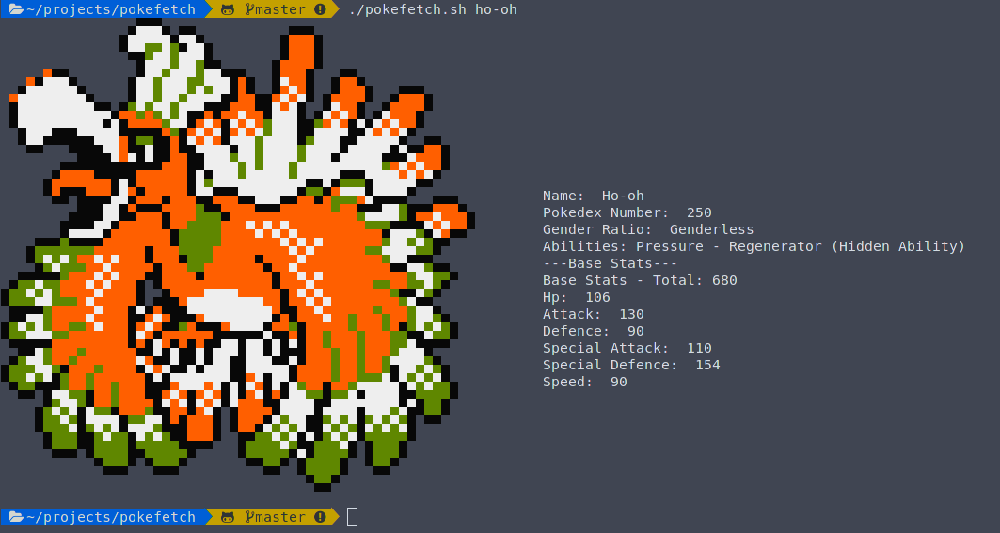

Hi there!

./pokefetch.sh <pokemon_name>

This is currently a very basic programming language that I am writing from scratch with my friend Thomas in Python. I enjoy constantly learning as much as possible, as long as it interests me, and this project is something I plan to work on long term, as it has seemingly-endless possibilities, especially for two people to work on.
The current progress is kept here, but there isn't much to see.
I am conducting research with a masters student on representations of convolutional neural networks in order to better understand how and why they work. There are many unanswered questions in the field regarding why neural networks perform so well, and it's usually just described as magic. Our goal is to de-mystify that magic this summer.